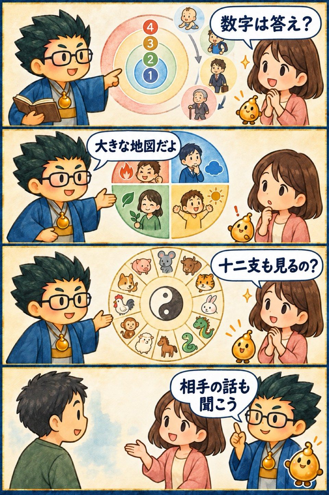

第2期 Zoom講座・第1.5回・補講
数秘・四分類・十二支
この回の要約
数秘や四分類、十二支を使って、人の特徴をわかりやすく整理する補講です。占いを届ける相手と場面まで考えます。
数秘・四分類・十二支は、人の違いを短い言葉で整理する入口です。
分類を断定に使わず、本人の実感を聞きながら具体的な場面へ置き換えます。
仕事にする場合は、占術の名前より、誰のどんな困りごとを軽くするかを先に決めます。
4コマ漫画でつかむ

タイムスタンプ
時間を押すと、上の動画がその場面から再生されます。
覚えておきたいこと
- 数秘数字の象徴を性格の決めつけではなく、質問づくりに使う
- 四分類考え方や行動の違いを大きく把握する
- 十二支周期・関係・役割を確認する
- 市場届ける相手と場面を具体化する
- 実践短い説明を作り、反応を聞いて直す
復習ポイント
講義内の占術上の説明・時代の読み・象徴的な解釈は、講師の見立てです。客観的な事実や将来を保証するものではありません。